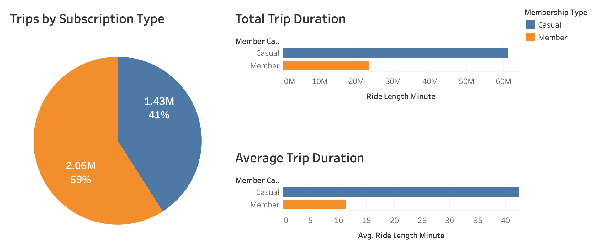

Introduction
This summer, I recently completed the Google Data Analytics Professional Certificate programme. This is an online intensive course which takes approximately 6 months to complete (at a suggested pace of 10 hours a week). The course provides lessons in Tableau, SQL, Spreadsheets and R.
Towards the end of this course, I was required to complete a data analysis case study to showcase the skills I learned throughout. This case study involved me working as a Data Analyst working in the Marketing Analyst team at Cyclistic, a (fictional) bike-sharing company based in Chicago.
Founded in 2016, Cyclistic has since expanded to a fleet of 5,824 bicycles that are geotagged and operating on a network of 692 stations across Chicago. Users are able to unlock a bike from one station, and then return it to another station iacross the network at any time. Cyclistic has 3 seperate pricing plans. These are: single-ride passes, full-day passes, and annual memberships. Customers that purchase single-ride or full-day passes are referred to as ‘Casual Riders’. While the customers who purchase annual memberships are ‘Cyclistic Members’.
In order to increase revenue, Cyclistic wants to develop a new marketing strategy which will convert casual riders into annual members. As the Data Analyst in this case, I am tasked with analysing the bike usage data to understand how Casual Riders and Annual Members use Cyclistic bikes differently, and therefore create a data driven marketing strategy.
For this case study, I used BigQuery for the data preparation and Tableau for the data visualization and analysis.
Data Merging and Cleaning
Although the company is fictional, the dataset provided is actually public data from a real-life bike-sharing company based in Chicago called Divvy. Data used for this case study is from the months of April 2020 to May 2021, which is stored in separate files for each month.
There are multiple null values across the files, and there are also critical issues where Station ID values have inconsistent format from December onwards. While I could use Python or PGAdmin for this task, I instead used BigQuery on the Google Cloud Platform. One of the reasons being that these files could possibly be too long and lengthy to run on my modestly specced Macbook. And the other being that this was a Google Certificate after all. So when in R̶o̶m̶e̶ Google do as the R̶o̶m̶a̶n̶s̶ Googlers do?!
I downloaded the 12 files dated between April 2020 and March 2021, and then uploaded these into a bucket on my Google Cloud Platform account. From here, I then loaded the csv files from the bucket into BigQuery. From here, I can start running queries with the data. I began by merging the 12 datasets as a unionized dataset. I then created a date format for the trip and ride length colums. I also noticed that Cyclistic performed periodic quality control for their bikes, that were recorded in these datasets. To avoid potential bias, I removed these trips.
I then ran the query, which performed successfully. We now have a total of 3,489,748 rows of processed data. I export the data to a CSV file, which has a size of 654.9mb. Our data is now ready to be loaded into Tableau!
Visualising the Data
Now it is time to use Tableau Desktop to visualise the data. For the connection type, I used a Tableau Data Extract file, as this makes large sets of data load faster than if it were in CSV format.
Our first visualisation shows that 59% of trips are made by Members while 41% are Casual Riders. We can see that the average trip duration of Casual Riders (45 mins) is double that of Members (17 mins). A likely explanation for this is that Members use the bikes solely to travel from point A to Point B, whereas Casual Riders use them more for their recreational leisure.

We can see from the following graph that bike usage rises significantly on 7AM for Members, whereas Casual Riders don’t reach a peak until 5PM.
Interestingly, we can see casual riders have a higher average length for every possible hour. From 12AM to 4AM Casual Riders tend to use the bike for over an hour (a possible explanation is that nightlife activities may be an underlying cause for increased trip durations).
When viewing the traffic stats by days of the week, we can see that Casual Riders continue to have a higher average trip length than Annual Members. However, Members make more separate trips than Casual Riders between Monday – Friday. Casual Riders tend to go on trips most during Saturday and Sunday.
We can see from the monthly trends, that bike usage peaks most during the month of August. From this graph, we can conclude that between June to September may be the most effective time to launch the campaign in order to get a wide reach.
These lists below show that Casual Riders tend to rent bikes along areas such as harbours or parks, while searching the street names of the most used starting points for Members revelas that they frequent areas located around office buildings. This would suggest that most of the annual Members are workers that commute to and from work, while Casual Riders are mainly tourists or perhaps a demographic such as pensioners.
Conclusion
We now have the relevant insights in order to create a data-driven marketing campaign. The key findings from this analysis are as follows:
From these findings, I have made the following recommendations: